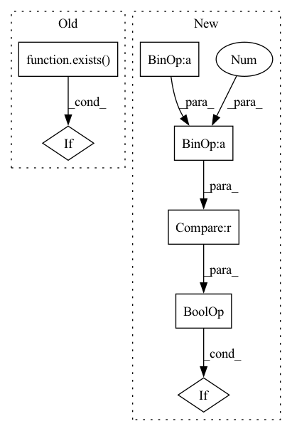

Pattern ID :11429
Before Change
mask = rearrange(mask, "b j -> b 1 1 j")
weight = weight.masked_fill(~mask, mask_value)
if exists( causal_mask) :
weight = weight.masked_fill(causal_mask, mask_value)
exp_weight = weight.exp()After Change
mask = rearrange(mask, "b j -> b 1 1 j")
weight = weight.masked_fill(~mask, mask_value)
if causal and q_start_index < (k_start_index + k_chunk_size - 1) :
q_range = torch.arange(q_start_index, q_start_index + q_chunk_size, device = device)
k_range = torch.arange(k_start_index, k_start_index + k_chunk_size, device = device)
causal_mask = rearrange(q_range, "i -> i 1") < rearrange(k_range, "j -> 1 j")In pattern: SUPERPATTERN
Frequency: 3
Non-data size: 7
Instances Fragment ID: 39042419
Project Name: lucidrains/memory-efficient-attention-pytorch
Commit Name: 4be82443e060be7224be5e8247c097fcc84aa72d
Time: 2022-03-20
Author: lucidrains@gmail.com
File Name: memory_efficient_attention_pytorch/memory_efficient_cosine_sim_attention.py
M Class Name: AnonimousClass
N Class Name: AnonimousClass
M Method Name: summarize_qkv_chunk(7)
N Method Name: summarize_qkv_chunk(6)
M Parent Class:
N Parent Class:
M File Name: memory_efficient_attention_pytorch/memory_efficient_cosine_sim_attention.py
N File Name: memory_efficient_attention_pytorch/memory_efficient_cosine_sim_attention.py
M Start Line: 53
M End Line: 68
N Start Line: 53
N End Line: 73
Before Change
causal_mask_chunk = causal_mask_chunks[q_index][k_index] if causal else None
if exists( causal_mask_chunk) and torch.all(causal_mask_chunk):
// if chunk is to be all masked out causally, skip
continue
After Change
weight_maxes = []
for k_index, (k_chunk, v_chunk, mask_chunk) in enumerate(zip(k_chunks, v_chunks, mask_chunks)):
q_start_index = q_index * q_bucket_size
k_start_index = k_index * k_bucket_size
if causal and k_start_index > (q_start_index + q_chunk.shape[-2] - 1) :
// if chunk is to be all masked out causally, skip
continue
Fragment ID: 39042418
Project Name: lucidrains/memory-efficient-attention-pytorch
Commit Name: 4be82443e060be7224be5e8247c097fcc84aa72d
Time: 2022-03-20
Author: lucidrains@gmail.com
File Name: memory_efficient_attention_pytorch/memory_efficient_attention.py
M Class Name: AnonimousClass
N Class Name: AnonimousClass
M Method Name: memory_efficient_attention(9)
N Method Name: memory_efficient_attention(9)
M Parent Class:
N Parent Class:
M File Name: memory_efficient_attention_pytorch/memory_efficient_attention.py
N File Name: memory_efficient_attention_pytorch/memory_efficient_attention.py
M Start Line: 87
M End Line: 136
N Start Line: 114
N End Line: 136
Before Change
mask = rearrange(mask, "b j -> b 1 1 j")
weight = weight.masked_fill(~mask, mask_value)
if exists( causal_mask) :
weight = weight.masked_fill(causal_mask, mask_value)
weight_max = weight.amax(dim = -1, keepdim = True).detach()After Change
mask = rearrange(mask, "b j -> b 1 1 j")
weight = weight.masked_fill(~mask, mask_value)
if causal and q_start_index < (k_start_index + k_chunk_size - 1) :
q_range = torch.arange(q_start_index, q_start_index + q_chunk_size, device = device)
k_range = torch.arange(k_start_index, k_start_index + k_chunk_size, device = device)
causal_mask = rearrange(q_range, "i -> i 1") < rearrange(k_range, "j -> 1 j") Fragment ID: 39042421
Project Name: lucidrains/memory-efficient-attention-pytorch
Commit Name: 4be82443e060be7224be5e8247c097fcc84aa72d
Time: 2022-03-20
Author: lucidrains@gmail.com
File Name: memory_efficient_attention_pytorch/memory_efficient_attention.py
M Class Name: AnonimousClass
N Class Name: AnonimousClass
M Method Name: summarize_qkv_chunk(7)
N Method Name: summarize_qkv_chunk(6)
M Parent Class:
N Parent Class:
M File Name: memory_efficient_attention_pytorch/memory_efficient_attention.py
N File Name: memory_efficient_attention_pytorch/memory_efficient_attention.py
M Start Line: 52
M End Line: 67
N Start Line: 52
N End Line: 72